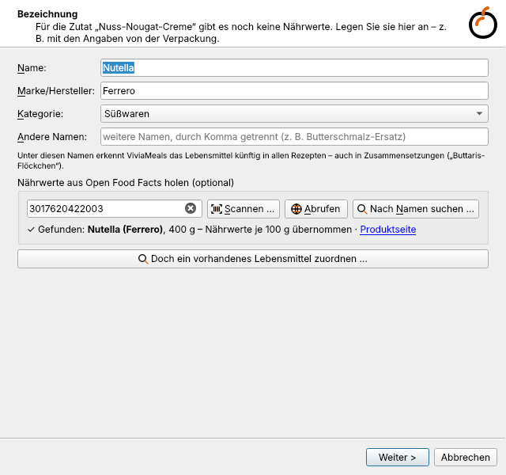
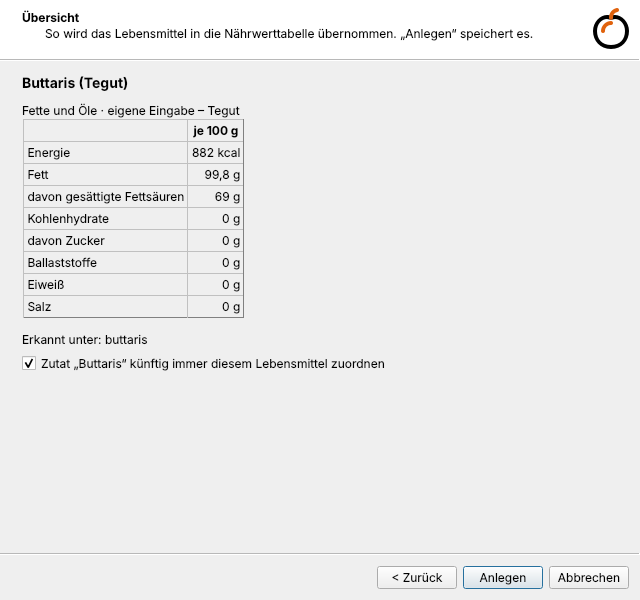
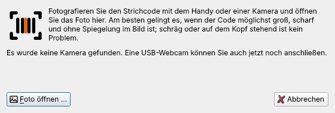
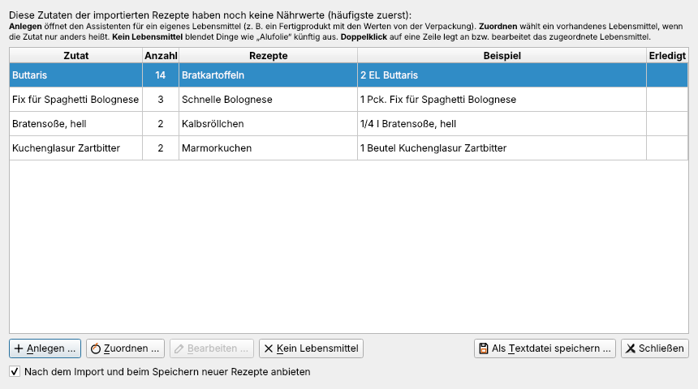
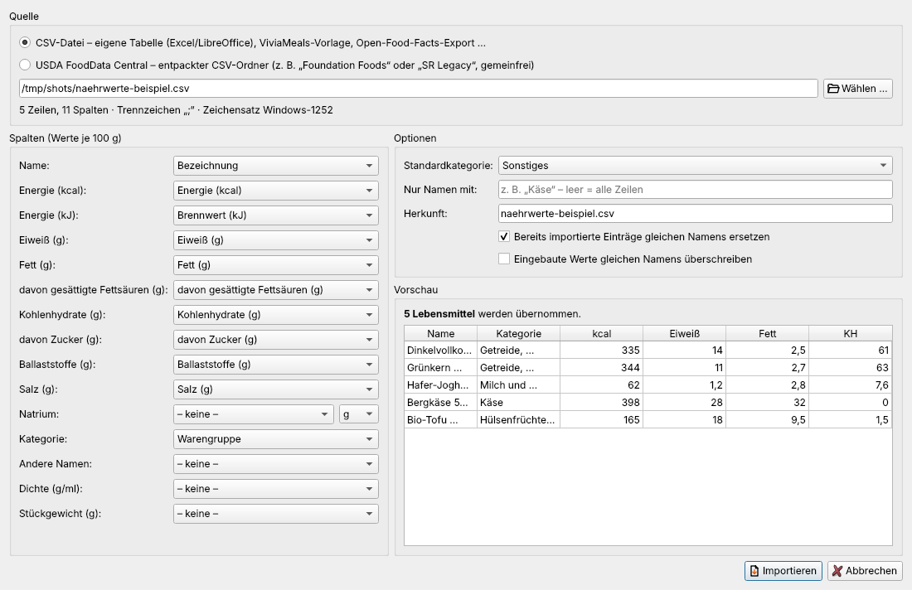
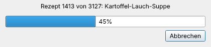

Nährwerte
Wie ViviaMeals rechnet
Für jede Zutat sucht ViviaMeals das passende Lebensmittel in seiner Nährwerttabelle und rechnet die Menge in Gramm um:
- Gewicht direkt (g, kg, oz, lb),
- Volumen über die Dichte des Lebensmittels (ml, l, EL, TL, Tasse, cup),
- Stück, Zehe, Dose, Packung über typische Stückgewichte,
- Angaben in Klammern wie „1 Süßkartoffel (ca. 400 g)“ vor allem anderen.
Daraus entstehen Energie (kcal und kJ), Fett, gesättigte Fettsäuren, Kohlenhydrate, Zucker, Ballaststoffe, Eiweiß und Salz – für das ganze Rezept, je Portion und in Prozent der Referenzmenge für einen durchschnittlichen Erwachsenen (8.400 kJ / 2.000 kcal nach der Lebensmittel-Informationsverordnung). Das Ergebnis wird im Rezept gespeichert.
Die Werte sind Richtwerte aus allgemeinen Tabellen. Sorte, Reife, Marke und Zubereitung können sie deutlich verändern. Rezepte, bei denen weniger als 80 % der Zutaten Nährwerte haben, erhalten keine Nährwert-Tags.
Die Nährwerttabelle
Eingebaut sind rund 400 Lebensmittelgruppen mit Werten je 100 g, Dichte, Stückgewichten und vielen deutschen und englischen Namen. Namen werden unabhängig von Umlauten und Akzenten verglichen („Gemuesebruehe“ = „Gemüsebrühe“, „Gruyere“ = „Gruyère“); zusammengesetzte Wörter wie „Zanderfilets“ oder „Hasenrücken“ werden erkannt.
Fisch und Meeresfrüchte sind nach Arten aufgeteilt, jeweils mit eigenen Nährwerten: magere Seefische (Kabeljau/Dorsch/Skrei, Seelachs, Schellfisch, Seehecht, Rotbarsch, Seeteufel, Scholle, Seezunge, Steinbutt, Heilbutt, Dorade, Wolfsbarsch, Rotbarbe …), fette Seefische (Makrele, Hering, Matjes, Sardinen, Sardellen, Aal), Lachs und Wildlachs, Thunfisch frisch, in Öl und im eigenen Saft, Süßwasserfische (Forelle, Saibling, Felchen, Zander, Hecht, Barsch, Karpfen, Wels, Stör …), Stockfisch/Bacalhau, Räucherfisch, Tintenfisch, Oktopus, Hummer und Krebse sowie die Muscheln: Miesmuscheln, Venus- und Herzmuscheln, Meermandeln, Austern, Jakobsmuscheln, Grünlippmuscheln und Entenmuscheln (Percebes).
Muscheln mit Schale: Miesmuscheln, Venusmuscheln, Meermandeln und Entenmuscheln werden in Rezepten meist mit Schale abgewogen („1 kg Miesmuscheln“). Ihre Werte beziehen sich deshalb auf das Gewicht mit Schale (essbar sind nur etwa 20–35 %). Steht „ausgelöst“ oder „ohne Schale“ dabei, rechnet ViviaMeals mit dem reinen Muschelfleisch. Austern und Jakobsmuscheln zählen als ausgelöstes Fleisch je Stück.
Beschreibungen wie „frisch“, „in Öl“, „geräuchert“ oder „getrocknet“ entscheiden bei Fisch über den Eintrag: „frischer Thunfisch“ ist kein Dosenthunfisch, „getrockneter Kabeljau“ ist Stockfisch, „Sardinen in Öl“ haben mehr Fett als frische Sardinen. Das gilt auch, wenn die Beschreibung im Zusatz steht („Thunfisch, frisch“).
Käse ist nach Gruppen aufgeteilt, jeweils mit typischen Werten: Hartkäse (Bergkäse, Gruyère, Comté, Manchego …), Parmesan/Grana/Pecorino, Emmentaler, Gouda und Edamer, Cheddar, halbfester Schnittkäse (Butterkäse, Tilsiter, Raclette …), Weißschimmel (Camembert, Brie), Dreifachrahm-Käse, Rotschmierkäse (Limburger, Münster, Taleggio, Époisses …), Blauschimmel, Ziegenkäse, Feta, Halloumi, Paneer, Mozzarella, Burrata, Provolone/Scamorza, Sauermilchkäse (Harzer, Handkäse), Kochkäse, Schmelzkäse und Brunost.
Fleisch und Geflügel unterscheiden Rinder-, Schweine-, Lamm-, gemischtes und Lamm-Rind-Hackfleisch, Mett, Schweine- und Rindersteak, Lamm und Hammel, Hähnchenbrust, Hähnchenkeule und -bein, ganzes Huhn, Ente, Entenbrust und -keule, Gans, Gänsebrust und -keule. Ganze Tiere (Huhn, Ente, Gans) sind mit Knochen gerechnet, so wie sie im Rezept abgewogen werden; Keulen und Brust je Stück nach dem essbaren Anteil. Dazu französische Pasteten (Pâté, Terrine, Pâté en croûte, Leberpastete, Rillettes, Foie gras) und spanische Tapas als fertige Gerichte (Tortilla, Patatas bravas, Croquetas, Albóndigas, Gambas al ajillo, Calamares, Gazpacho, Pimientos de Padrón, Chorizo, Morcilla, Jamón ibérico, Flan, Churros, Turrón …).
Obst steht nach Sorten in der Tabelle: Kern- und Steinobst, alle gängigen Beeren (Himbeeren, Heidelbeeren, Johannisbeeren, Stachelbeeren, Preiselbeeren, Holunder, Sanddorn, Aronia …), Zitrusfrüchte (Orange, Mandarine, Grapefruit, Limette, Kumquat, Yuzu …), Melonen und die Südfrüchte (Papaya, Maracuja, Kaki, Granatapfel, Feige, Datteln, Litschi, Guave, Cherimoya, Sternfrucht, Drachenfrucht, Kochbanane, frische Kokosnuss, junge Jackfruit …). „Getrocknete Feigen“ oder „Aprikosen, getrocknet“ zählen als Trockenobst, „Saft von 2 Limetten“ als Saft.
Extras → Nährwerttabelle … zeigt alle Lebensmittel. Hier können Sie eigene Lebensmittel anlegen, eingebaute Werte überschreiben und Werte importieren oder exportieren.
Eigene Lebensmittel anlegen
Fertigprodukte und Markenartikel („Fix für Spaghetti Bolognese“, eine bestimmte Bratensoße) stehen in keiner allgemeinen Tabelle. Mit dem Lebensmittel-Assistenten übertragen Sie die Angaben von der Verpackung.
Aufruf: Extras → Eigenes Lebensmittel anlegen …, im Editor Fehlende Lebensmittel anlegen … – oder automatisch nach einem Import bzw. beim Speichern eines neuen Rezepts, wenn Zutaten ohne Nährwerte übrig bleiben (in den Einstellungen abschaltbar).

- Bezeichnung: Name, Marke (optional), Kategorie und weitere Namen, unter denen die Zutat in Rezepten vorkommt.
- Open Food Facts: Barcode (EAN-13, EAN-8, UPC) eintippen und Abrufen – ein USB-Barcode-Scanner tippt die Ziffern selbst. Oder Nach Namen suchen …. Übernommen werden Name, Marke, Kategorie, Nährwerte und Packungsinhalt. Gesendet wird nur der Barcode bzw. Suchbegriff.
- Scannen … liest den Strichcode mit der Webcam (eingebaut oder per USB) oder aus einem Foto – siehe Strichcode scannen.
- Heißt die Zutat nur anders als ein vorhandenes Lebensmittel („Pflanzenfett“ → Margarine), besser Doch ein vorhandenes Lebensmittel zuordnen … wählen.
- Nährwerte: Angaben je 100 g, je 100 ml oder je Portion; Energie in kcal oder kJ; Natrium statt Salz ankreuzbar. Eine Prüfung warnt bei unmöglichen Werten (Zucker größer als Kohlenhydrate) und wenn die Energie nicht zu den Nährstoffen passt – meist wurden dann kJ als kcal eingetragen.
- Menge und Packung: Dichte (für EL, TL und ml), Packungsinhalt mit Einheit (Pck., Becher, Dose, Würfel …) und Stückgewicht. So wird aus „1 Pck. Fix für Bolognese“ richtig 40 g.
- Übersicht: Werte je 100 g und je Packung; „Zutat … künftig immer diesem Lebensmittel zuordnen“.

Strichcode scannen
Der Knopf Scannen … neben dem Barcode-Feld öffnet den Strichcode-Scanner. Erkannt werden die Strichcodes auf Lebensmittelverpackungen: EAN-13, EAN-8 und UPC-A. Der gelesene Code wird ins Barcode-Feld eingetragen und sofort bei Open Food Facts abgerufen.
- Mit der Webcam: Ist eine Kamera angeschlossen, zeigt der Scanner ihr Bild. Halten Sie die Packung ruhig vor die Kamera, so dass der Strichcode einen großen Teil des Bildes füllt – waagerecht oder senkrecht, gut beleuchtet und ohne Spiegelung. Sobald der Code sicher erkannt ist (in zwei Bildern hintereinander), ertönt ein kurzer Ton und der Scanner schließt sich.
- Mehrere Kameras: Oben stehen alle angeschlossenen Kameras zur Wahl, etwa die eingebaute Laptop-Kamera und eine USB-Webcam; zwei baugleiche erscheinen als „USB Camera“ und „USB Camera (2)“. ViviaMeals merkt sich die gewählte Kamera und nimmt sie beim nächsten Mal wieder, sobald sie angeschlossen ist – sonst die Standardkamera des Systems. Eine Webcam, die Sie bei geöffnetem Scanner einstecken, erscheint sofort in der Liste; wird die benutzte Kamera abgezogen, wechselt der Scanner zur nächsten.
- Mit einem Foto: Foto öffnen … wertet ein Foto oder einen Scan aus (JPEG, PNG, BMP …), zum Beispiel ein Handyfoto der Packung. Der Code darf schräg oder auf dem Kopf stehen; er sollte aber scharf und nicht zu klein sein. Ist keine Kamera vorhanden, fragt Scannen … gleich nach dem Foto.

Die Bilder werden nur im Programm ausgewertet – nichts wird gespeichert oder gesendet außer dem erkannten Barcode an Open Food Facts. Wird nichts erkannt, hilft meist mehr Licht, ein größerer Abstand (unscharfe Nahaufnahmen) oder ein Foto, auf dem nur der Strichcode zu sehen ist.
Hinweis: Unter macOS fragt das System beim ersten Scannen, ob ViviaMeals die Kamera benutzen darf. Unter Windows und Linux muss die Kamera frei sein – ein Videoprogramm, das sie gerade benutzt, blockiert sie.
Fehlende Lebensmittel finden
Extras → Datenbank nach fehlenden Lebensmitteln durchsuchen … prüft alle Rezepte der Datenbank gegen die aktuelle Nährwerttabelle (mit Fortschrittsbalken, abbrechbar) und listet jede Zutat, für die kein Lebensmittel gefunden wurde – mit Häufigkeit, den Rezepten, in denen sie vorkommt, und einer Beispielzeile. Die gleiche Liste erscheint auf Wunsch nach einem Import und beim Speichern eines neuen Rezepts.

Die Tabelle ist anklickbar:
- Doppelklick auf eine offene Zeile (oder Anlegen) öffnet den Lebensmittel-Assistenten mit dem Namen der Zutat. Dort legen Sie ein neues Lebensmittel an oder ordnen ein vorhandenes zu.
- Doppelklick auf eine erledigte Zeile (oder Bearbeiten) öffnet das eben angelegte bzw. zugeordnete Lebensmittel zum Ändern – etwa um Nährwerte, Dichte oder Stückgewicht nachzutragen.
- Zuordnen verknüpft die Zutat mit einem vorhandenen Lebensmittel, wenn sie nur anders heißt.
- Kein Lebensmittel blendet Einträge wie „Backpapier“ oder „Alufolie“ dauerhaft aus.
- Als Textdatei speichern … schreibt die ganze Liste (Zutat, Anzahl, Stand, Beispielzeilen und alle Rezepte) in eine UTF-8-Textdatei – praktisch, um sie in Ruhe abzuarbeiten oder weiterzugeben.
Was gar nicht erst in der Liste landet: Küchenhelfer wie Backpapier, Alufolie, Holzspieße, Zahnstocher, Papierbackförmchen oder Springform zählen nicht als Zutat und auch nicht bei den Nährwerten. Ältere Rezeptsammlungen enthalten außerdem oft Zeilen, die gar keine Zutaten sind – Erfasser („Erfasst von …“, „K.-H. Boller …“), Nährwertangaben der Vorlage („Pro Portion 44 g E …“), Mahlzeiten in Großbuchstaben („MITTAGESSEN“) oder umbrochene Reste der Vorzeile („geschnitten“, „in dünnen Scheiben“). Beim Import und beim Abgleich werden sie aufgeräumt: Erfasser kommen zur Quelle, Nährwertangaben als Hinweis ans Ende der Zubereitung, Mahlzeiten werden Zwischenüberschriften, Reste gehören zum Zusatz der Vorzeile.
Die Nährwerttabelle kennt auch schweizerdeutsche Namen (Rüebli, Peterli, Wirz, Kefen, Randen, Lattich, Zucchetti, Eierschwämmli, Poulet, Baumnüsse, Rahm, Glace …), Einzahl und Mehrzahl („Champignon“, „Nelke“) und verzeiht Tippfehler in längeren Wörtern („Pfefffer“, „Puderzucekr“). Zeichenfehler aus alten DOS-Sammlungen („Eiweiá“ statt „Eiweiß“, „fraŒche“ statt „fraîche“) werden beim Import und beim Abgleich berichtigt.
Wurde etwas angelegt oder zugeordnet, bietet ViviaMeals danach den Abgleich aller Rezepte an. Das gilt auch, wenn die Suche feststellt, dass die gespeicherten Zuordnungen einiger Rezepte nicht mehr zur Nährwerttabelle passen.
Nährwerte importieren und exportieren
Extras → Nährwerttabelle → Importieren / Exportieren übernimmt viele Werte auf einmal:
- eigene Tabellen aus Excel oder LibreOffice Calc und die mitgelieferte CSV-Vorlage,
- Exporte von Open Food Facts,
- den entpackten CSV-Ordner von USDA FoodData Central (gemeinfrei).
Trennzeichen, Zeichensatz, Dezimalkomma, „<0,1“ sowie kJ und Natrium werden erkannt bzw. umgerechnet; die Spalten ordnet ViviaMeals anhand der Überschriften zu (änderbar, mit Vorschau). Jeder Import erhält eine Herkunft und lässt sich später gesammelt wieder entfernen.

Mahlzeit- und Nährwert-Tags
ViviaMeals vergibt beim Import, im Editor über Ergänzen und für alle Rezepte über Extras → Mahlzeit- und Nährwert-Tags für alle Rezepte ergänzen … Tags, die der Wochenplan und die Suche nutzen.
Mahlzeit-Tags – aus Kategorien, Titel, Zutaten und Nährwerten geschätzt: frühstück, hauptgerichte, leichte Mahlzeit, zwischenmahlzeit, desserts, süßspeise, backen.
Nährwert-Tags – aus den berechneten Werten:
| Tag | Bedingung |
|---|---|
| eiweißreich | mind. 20 % der Energie aus Eiweiß und mind. 15 g Eiweiß je Portion |
| fettarm | höchstens 3 g Fett je 100 g |
| kalorienarm | höchstens 80 kcal je 100 g und höchstens 400 kcal je Portion |
| hochkalorisch | eine Portion hat mehr Energie als der Richtwert für ihre Mahlzeitart (siehe unten) |
| vitaminreich | mind. 200 g Gemüse, Obst und Kräuter je Portion oder mind. die Hälfte des Portionsgewichts |
| reduktionsdiät | höchstens 600 kcal je Portion und 150 kcal je 100 g, höchstens 35 % Energie aus Fett und 20 % aus Zucker, mind. 15 % aus Eiweiß, kein Dessert |
„eiweißreich“ und „fettarm“ folgen den Grenzwerten der EU-Verordnung über nährwertbezogene Angaben; „vitaminreich“ ist ein Näherungswert, denn die Tabelle enthält keine Vitamine. Tags werden nur ergänzt, nie entfernt – mit einer Ausnahme: Nährwert-Tags, die nach einer Änderung der Zutaten nicht mehr zutreffen, entfallen beim Neuberechnen.
Wann ist ein Gericht hochkalorisch? Maßstab ist die übliche Portion, nicht die Energiedichte: Nüsse, Käse oder ein Rührkuchen haben viel Energie je 100 g, eine normale Portion davon ist aber nicht automatisch zu viel. ViviaMeals vergleicht deshalb die kcal je Portion mit dem Anteil, den eine Mahlzeit dieser Art am Tagesbedarf haben sollte. Grundlage ist die EU-Referenzmenge von 2000 kcal am Tag:
| Mahlzeitart | Anteil | Richtwert je Portion |
|---|---|---|
| Hauptgericht (oder Art unbekannt) | 40 % | 800 kcal |
| leichte Mahlzeit, Frühstück, Süßspeise | 30 % | 600 kcal |
| Zwischenmahlzeit, Dessert, Kuchen und Gebäck | 15 % | 300 kcal |
„hochkalorisch“ wird vergeben, wenn eine Portion über dem Richtwert liegt. Gehört ein Rezept zu mehreren Arten (z. B. Hauptgericht und leichte Mahlzeit), gilt der großzügigste Wert. Nie getaggt werden Grundrezepte (Soßen, Teige, Getränke), Rezepte ohne Portionsangabe und Kuchen mit „1 Portion“ (dann wäre die Portion der ganze Kuchen). Der Richtwert ist eine Orientierung für Erwachsene, keine Ernährungsberatung.
Saison-Tags
Frische Zutaten haben in Deutschland ihre Saison – Spargel im Frühling, Erdbeeren im Sommer, Kürbis im Herbst, Grünkohl im Winter. ViviaMeals vergibt danach die Tags frühling, sommer, herbst, winter oder ganzjährig: beim Import (abschaltbar unter Einstellungen → Import), im Editor über Ergänzen und nachträglich für die ganze Datenbank über Extras → Saison-Tags für alle Rezepte vergeben … (mit Vorschau und Rückfrage).
So wird gerechnet:
- Grundlage ist ein Saisonkalender für regionale Ware (Freiland bzw. Lager) nach Monaten, etwa Spargel April–Juni, Erdbeeren Mai–August, Tomaten Juli–Oktober, Kürbis August–Dezember, Feldsalat Oktober–März, Grünkohl November–Februar. Auch Wild (Oktober–Januar) und Gans (November–Dezember) haben eine Saison.
- Fisch und Meeresfrüchte haben Saison außerhalb ihrer Laichzeit: Dann ist das Fleisch fest und aromatisch, und der Verzicht in der Laichzeit schont die Bestände. Beispiele: Kabeljau September–Januar (Laichzeit Februar–April), Skrei Januar–April, Seelachs Mai–Dezember (Laichzeit Januar–April), Schellfisch und Wittling September–Januar, Scholle Mai–Dezember, Seezunge und Steinbutt Herbst und Winter, Wolfsbarsch und Dorade September–Dezember, Hering und Sprotten März–Mai, Matjes Juni–August, Makrele Juni–Oktober, Sardinen Juni–September, Karpfen September–April, Zander Juni–März, Hecht Mai–Januar; Muscheln und Austern in den „Monaten mit r“ (September–April), Jakobsmuscheln Oktober–April. Zuchtfisch und Fernfang (Lachs, Forelle, Pangasius, Garnelen, Tintenfisch …) zählen als ganzjährig.
- Ein Monat passt zum Rezept, wenn mindestens 80 % des Gewichts der Saisonzutaten dann Saison haben – ein Bund Radieschen macht aus einem Grünkohlgericht also kein Sommeressen.
- Eine Jahreszeit (Frühling März–Mai, Sommer Juni–August, Herbst September–November, Winter Dezember–Februar) wird vergeben, wenn mindestens zwei ihrer Monate passen.
- ganzjährig bekommen Rezepte, deren frische Zutaten es immer gibt (Kartoffeln, Zwiebeln, Möhren, Kohl und Äpfel vom Lager, Frühlingszwiebeln, Champignons, Bananen …) und die einen nennenswerten Anteil frischer Zutaten haben.
- Nicht gezählt werden Tiefkühlware, Konserven, Getrocknetes, Geräuchertes, Mariniertes, Säfte, Mus, Pulver und Ähnliches – „Erbsen (TK)“, „Tomaten aus der Dose“ oder Räucherlachs gibt es das ganze Jahr.
Die Themenauswahl Saisonal im Hauptfenster zeigt automatisch die Rezepte der aktuellen Jahreszeit (Die Rezeptliste).
Anders als die übrigen Tags werden Saison-Tags dabei ersetzt: Ändern Sie die Zutaten, passt ViviaMeals die Jahreszeit an. Andere Tags bleiben unberührt.
Alle Rezepte abgleichen
Extras → Alle Rezepte mit der Lebensmitteldatenbank abgleichen … bringt die ganze Datenbank auf den Stand der aktuellen Nährwerttabelle – etwa nachdem Sie eigene Lebensmittel angelegt oder zugeordnet haben, oder nach einem Programm-Update mit erweiterter Tabelle. Nach einem solchen Update fragt ViviaMeals beim ersten Öffnen jeder Datenbank von selbst, ob abgeglichen werden soll (einmal je Datenbank und Programmfassung). Für jedes Rezept
- werden alle Zutaten neu zugeordnet (von Hand im Editor festgelegte Zuordnungen bleiben),
- werden Kalorien und Nährwerte neu berechnet und die Nährwert-Tags angepasst,
- wird ein falsches „vegetarisch“ oder „vegan“ entfernt, wenn das Rezept Fleisch, Fisch, Meeresfrüchte (Krabben, Garnelen, Muscheln, Tintenfisch, Hummer …) oder tierische Würzmittel (Fischsauce, Austernsauce, Sardellen, Dashi …) enthält; „fisch“ bzw. „fleischgerichte“ wird ergänzt,
- werden vorhandene Saison-Tags an die Zutaten angepasst,
- wird die Zutatenliste aufgeräumt (siehe oben) und werden DOS-Zeichenfehler berichtigt.
Ein Fortschrittsbalken zeigt den Stand; beim Abbrechen bleiben die schon abgeglichenen Rezepte gespeichert. Geschrieben werden nur Rezepte, die sich wirklich ändern. Zum Schluss nennt eine Übersicht, wie viele Rezepte neue Nährwerte oder Tags bekommen haben und wie viele Zutaten noch kein Lebensmittel haben – die lassen sich gleich durchsehen.
